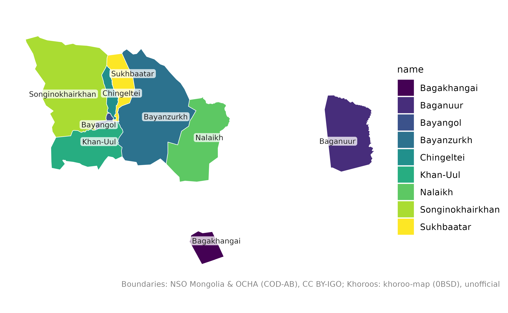
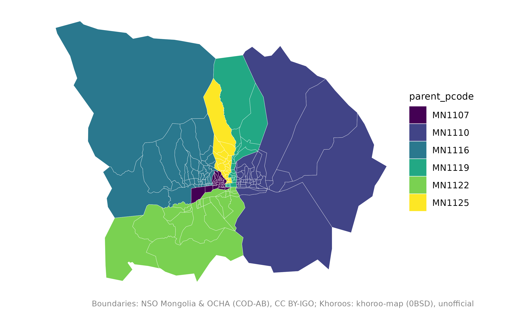
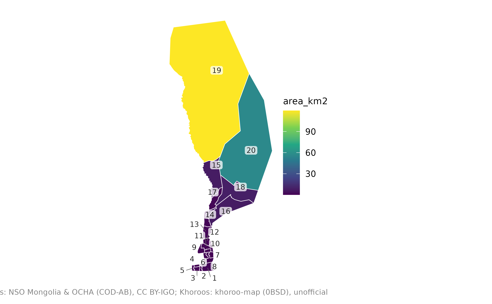
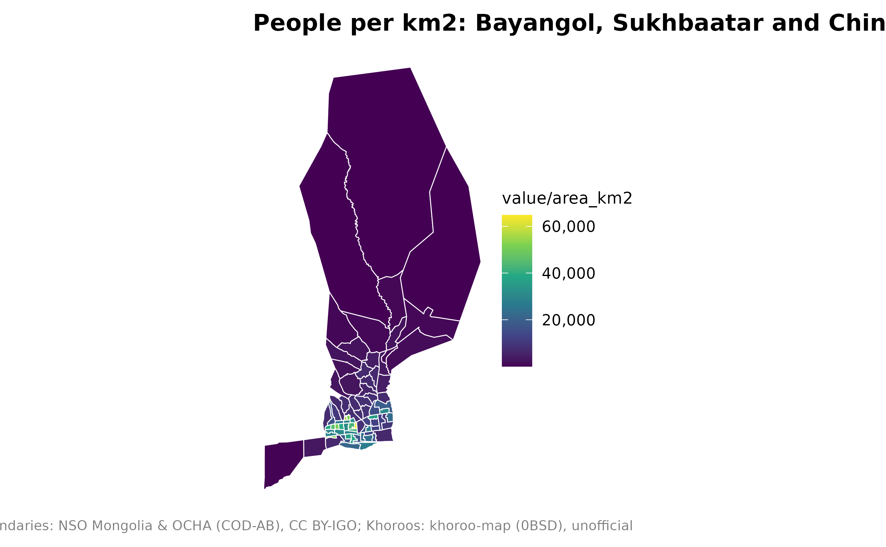

Ulaanbaatar has three map levels: the city, its 9 districts (duureg) and its 204 khoroos. The layers fit together exactly.
mn_ub()
#> Simple feature collection with 1 feature and 15 fields
#> Geometry type: MULTIPOLYGON
#> Dimension: XY
#> Bounding box: xmin: 106.3626 ymin: 47.30196 xmax: 108.5008 ymax: 48.27193
#> Geodetic CRS: WGS 84
#> # A tibble: 1 × 16
#> pcode name name_en name_mn name_mns level type number iso_code nso_code
#> <chr> <chr> <chr> <chr> <chr> <chr> <chr> <int> <chr> <chr>
#> 1 MN11 Ulaanbaat… Ulaanb… Улаанб… Ulaanba… aimag capi… NA MN-1 511
#> # ℹ 6 more variables: parent_pcode <chr>, region_pcode <chr>,
#> # aimag_pcode <chr>, soum_pcode <chr>, area_km2 <dbl>,
#> # geometry <MULTIPOLYGON [°]>
mn_ub_districts()
#> Simple feature collection with 9 features and 15 fields
#> Geometry type: MULTIPOLYGON
#> Dimension: XY
#> Bounding box: xmin: 106.3626 ymin: 47.30196 xmax: 108.5008 ymax: 48.27193
#> Geodetic CRS: WGS 84
#> # A tibble: 9 × 16
#> pcode name name_en name_mn name_mns level type number iso_code nso_code
#> <chr> <chr> <chr> <chr> <chr> <chr> <chr> <int> <chr> <chr>
#> 1 MN1101 Baganuur Baganu… Багану… Baganuur soum dist… NA NA 51101
#> 2 MN1104 Bagakhan… Bagakh… Багаха… Bagakha… soum dist… NA NA 51104
#> 3 MN1107 Bayangol Bayang… Баянгол Bayangol soum dist… NA NA 51107
#> 4 MN1110 Bayanzur… Bayanz… Баянзү… Bayanzü… soum dist… NA NA 51110
#> 5 MN1113 Nalaikh Nalaikh Налайх Nalaikh soum dist… NA NA 51113
#> 6 MN1116 Songinok… Songin… Сонгин… Songino… soum dist… NA NA 51116
#> 7 MN1119 Sukhbaat… Sukhba… Сүхбаа… Sükhbaa… soum dist… NA NA 51119
#> 8 MN1122 Khan-Uul Khan-U… Хан-Уул Khan-Uul soum dist… NA NA 51122
#> 9 MN1125 Chingelt… Chinge… Чингэл… Chingel… soum dist… NA NA 51125
#> # ℹ 6 more variables: parent_pcode <chr>, region_pcode <chr>,
#> # aimag_pcode <chr>, soum_pcode <chr>, area_km2 <dbl>,
#> # geometry <MULTIPOLYGON [°]>
mn_khoroos()
#> Simple feature collection with 204 features and 15 fields
#> Geometry type: MULTIPOLYGON
#> Dimension: XY
#> Bounding box: xmin: 106.3626 ymin: 47.30196 xmax: 108.5008 ymax: 48.27193
#> Geodetic CRS: WGS 84
#> # A tibble: 204 × 16
#> pcode name name_en name_mn name_mns level type number iso_code nso_code
#> <chr> <chr> <chr> <chr> <chr> <chr> <chr> <int> <chr> <chr>
#> 1 MN110151 1-r k… 1-r kh… 1-р хо… 1-r kho… bag khor… 1 NA 5110151
#> 2 MN110153 2-r k… 2-r kh… 2-р хо… 2-r kho… bag khor… 2 NA 5110153
#> 3 MN110155 3-r k… 3-r kh… 3-р хо… 3-r kho… bag khor… 3 NA 5110155
#> 4 MN110157 4-r k… 4-r kh… 4-р хо… 4-r kho… bag khor… 4 NA 5110157
#> 5 MN110159 5-r k… 5-r kh… 5-р хо… 5-r kho… bag khor… 5 NA 5110159
#> 6 MN110451 1-r k… 1-r kh… 1-р хо… 1-r kho… bag khor… 1 NA 5110451
#> 7 MN110453 2-r k… 2-r kh… 2-р хо… 2-r kho… bag khor… 2 NA 5110453
#> 8 MN110751 1-r k… 1-r kh… 1-р хо… 1-r kho… bag khor… 1 NA 5110751
#> 9 MN110752 26-r … 26-r k… 26-р х… 26-r kh… bag khor… 26 NA 5110752
#> 10 MN110753 2-r k… 2-r kh… 2-р хо… 2-r kho… bag khor… 2 NA 5110753
#> # ℹ 194 more rows
#> # ℹ 6 more variables: parent_pcode <chr>, region_pcode <chr>,
#> # aimag_pcode <chr>, soum_pcode <chr>, area_km2 <dbl>,
#> # geometry <MULTIPOLYGON [°]>Districts
mn_map(mn_ub_districts(), fill = name, label = TRUE)
Baganuur and Bagakhangai are exclaves, far to the east and south-east of the main city. To focus on the city centre, keep the districts you need:
central <- c("Bayangol", "Bayanzurkh", "Chingeltei", "Khan-Uul", "Songinokhairkhan", "Sukhbaatar")
mn_map(mn_khoroos(district = central), fill = parent_pcode)
District names accept common abbreviations such as
"BZD", "SBD" or "KhUD", and
Cyrillic:
mn_khoroos(district = "\u0411\u0417\u0414")
#> Simple feature collection with 43 features and 15 fields
#> Geometry type: MULTIPOLYGON
#> Dimension: XY
#> Bounding box: xmin: 106.9215 ymin: 47.72161 xmax: 107.4114 ymax: 48.20897
#> Geodetic CRS: WGS 84
#> # A tibble: 43 × 16
#> pcode name name_en name_mn name_mns level type number iso_code nso_code
#> <chr> <chr> <chr> <chr> <chr> <chr> <chr> <int> <chr> <chr>
#> 1 MN111051 1-r k… 1-r kh… 1-р хо… 1-r kho… bag khor… 1 NA 5111051
#> 2 MN111052 26-r … 26-r k… 26-р х… 26-r kh… bag khor… 26 NA 5111052
#> 3 MN111053 2-r k… 2-r kh… 2-р хо… 2-r kho… bag khor… 2 NA 5111053
#> 4 MN111054 27-r … 27-r k… 27-р х… 27-r kh… bag khor… 27 NA 5111054
#> 5 MN111055 3-r k… 3-r kh… 3-р хо… 3-r kho… bag khor… 3 NA 5111055
#> 6 MN111056 28-r … 28-r k… 28-р х… 28-r kh… bag khor… 28 NA 5111056
#> 7 MN111057 4-r k… 4-r kh… 4-р хо… 4-r kho… bag khor… 4 NA 5111057
#> 8 MN111058 29-r … 29-r k… 29-р х… 29-r kh… bag khor… 29 NA 5111058
#> 9 MN111059 5-r k… 5-r kh… 5-р хо… 5-r kho… bag khor… 5 NA 5111059
#> 10 MN111060 30-r … 30-r k… 30-р х… 30-r kh… bag khor… 30 NA 5111060
#> # ℹ 33 more rows
#> # ℹ 6 more variables: parent_pcode <chr>, region_pcode <chr>,
#> # aimag_pcode <chr>, soum_pcode <chr>, area_km2 <dbl>,
#> # geometry <MULTIPOLYGON [°]>Khoroos
Khoroos are numbered within their district; the number is in the
number column, and mn_map(label = TRUE) shows
it.
mn_map(mn_khoroos(district = "Sukhbaatar"), fill = area_km2, label = TRUE)
To find one khoroo, use mn_match() with the
district:
Joining statistics
NSO publishes many statistics by khoroo. The example data has the mid-year population:
pop <- mn_example_population[mn_example_population$Year == 2025, ]
khoroo_pop <- mn_join(pop, by = "Region", level = "bag", within = "Ulaanbaatar")
#> ℹ Joining at the bag level; dropped 371 rows for larger units ("country",
#> "region", "aimag", and "soum").
mn_map(
khoroo_pop[khoroo_pop$parent_pcode %in% c("MN1107", "MN1119", "MN1125"), ],
fill = value / area_km2,
title = "People per km2: Bayangol, Sukhbaatar and Chingeltei"
)
Interactive maps
mn_leaflet(khoroo_pop, fill = value)About the khoroo boundaries
The khoroo boundaries come from the open khoroo-map project, which
does not state where its data come from, so treat them as
unofficial. They were fitted to the official
Ulaanbaatar outline; the district boundaries in
mn_ub_districts() are the unions of their khoroos and
follow the current city layout. See ?mn_khoroos for
details.